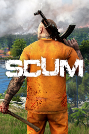

SCUM
Detalles
 |
|
| Tiempo de juego | No Jugado |
| Última actividad | Nunca |
| Añadido | 7/4/2025 12:45:45 |
| Modificado | 7/4/2025 12:58:08 |
| Estado de finalización | Not Played |
| Librería | Playnite |
| Fuente | 6TB STORE |
| Plataforma | PC (Windows) |
| Fecha de lanzamiento | 6/17/2025 |
| Puntuación de la Comunidad | 74 |
| Puntuación de la Crítica | |
| Puntuación de usuario | |
| Género | Acción Aventura Indie Multijugador masivo |
| Desarrollador | Gamepires |
| Editor | Gamepires |
| Característica | Comodidad De La Cámara Controles De Volumen Personalizados Cooperativo Cooperativo En Línea Cromos De Dificultad Ajustable Estadísticas Jcj Jcj En Línea Logros De Multijugador Multijugador Masivo Sonido Envolvente Sonido Estéreo Un Jugador |
| Enlaces | Punto de encuentro Discusiones Guías Noticias Página de la tienda PCGamingWiki Logros |
| Tag | |
Descripción


¡Bienvenidos a la isla SCUM, reclusos! Un lugar en el que la participación es forzosa y el entorno es cruel, aunque más crueles son sus habitantes. El público disfrutará de vuestro afán desesperado por sobrevivir, y procurándoles entretenimiento redimiréis vuestros crímenes y saldaréis vuestra deuda con la sociedad. Ni se os ocurra creer que la muerte os salvará; vuestra condena no ha hecho más que empezar.
SCUM es un juego de supervivencia en mundo abierto difícil y realista a más no poder. Cada aspecto de la supervivencia lo integran detalles fundamentales, como la gestión del inventario, el mantenimiento del armamento, la administración de la resistencia y la fatiga, o el sistema de metabolismo más minucioso jamás concebido en un videojuego. ¿Seréis capaces de aguantar con vida en la isla? ¡Lanzaos de cabeza a averiguarlo!
Características principales
La isla

Os presentamos el mapa más extenso que se ha creado nunca en Unreal Engine 4, con 225 ㎢, inspirado en la topografía croata: desde el hermoso litoral adriático hasta inhóspitas cordilleras nevadas, pasando por bosques exuberantes. Un mapa cargado de aldeas, pueblos, ciudades, bases militares, fábricas e infraestructura civil entre muchos más puntos de interés. Tampoco pueden faltar zonas de riesgo tales como búnkeres inexpugnables, o abandonados y repletos de amenazas, así como un sector radiactivo donde los peligros no solo son los que se aprecian a simple vista.
Metabolismo

Meteos de lleno en el sistema de metabolismo más complejo y formidable que se ha diseñado jamás. Más allá de preocuparos por comer y beber para no desfallecer, os tocará estar pendientes de qué coméis y qué bebéis para que vuestros reclusos gocen de la mejor forma física. Si a esto le sumamos complejas mecánicas de salud y un sistema de atributos y habilidades propio de un RPG, podréis adecuar la dieta del recluso a vuestro estilo particular de juego.
Peligros

La isla os depara peligros a punta de pala: experimentos malogrados que han engendrado monstruosidades mutantes, participantes resurgidos como títeres homicidas, otros supervivientes dispuestos a matar en beneficio propio, la radiación procedente de una central nuclear en ruinas y otros jugadores que harán lo que sea con tal de salir a flote.
Fabricación y saqueo

No os faltarán pertrechos necesarios para sobrevivir, tanto si los fabricáis con vuestras propias manos como si los encontráis por la isla. Armas cuerpo a cuerpo, arcos, armas de fuego, indumentaria, mochilas y un sistema de cocinado muy completo. Para cada fin, una herramienta; vosotros decidís qué uso darles.
Mantenimiento

Tanto si hablamos de vuestro rifle favorito como de vuestros vaqueros de la suerte, procurad llevar el equipo siempre bien mantenido, ya que de ello dependerá cuánta carga podréis llevar a cuestas, la probabilidad de que se os atasquen las armas o la calidad de los objetos fabricados.
Vehículos

No importa si es por tierra, mar o aire, porque siempre habrá un vehículo perfecto para ello. Gracias al sistema modular, podréis añadir y retirar piezas a cada vehículo. Incorporad blindajes o dejadlo pelado, optando entre protección o estética, y moveos por el mapa con total comodidad.
Multijugador

Ponemos a vuestra disposición servidores a mansalva, en los que trataréis de sobrevivir junto a otros 64 jugadores, ya sea uniendo fuerzas o matándoos los unos a los otros. También podréis utilizar servidores propios y configurar la experiencia al milímetro con un sinfín de ajustes de personalización.